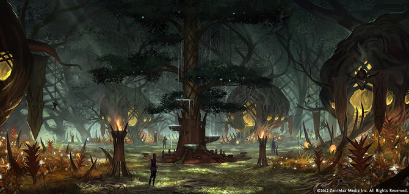

Валенвуд (оріг. «Valenwood») - землі босмерів. Знаходиться на південь від Сіроділу, і на захід від Ельсвейру. Чіткі межі цієї провінції невідомі, оскільки численні війни з сусідами часто перекроювали карти регіону. Валенвуд являє собою величезний ліс, в основному тропічний. По берегах переважають джунглі і мангрові болота. Клімат в Валенвуді тропічний: висока температура і часті проливні дощі.